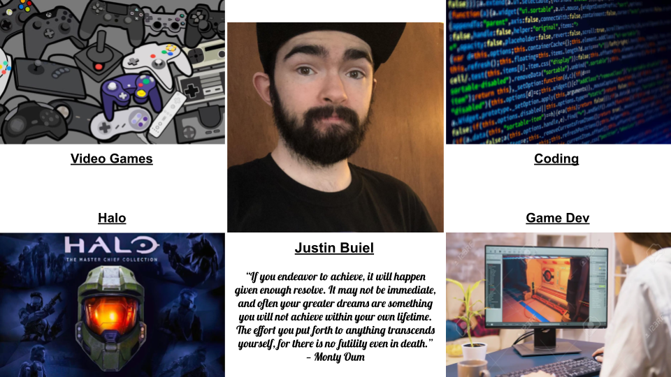

Back to Home
Web Application Development Assignment 0

I started playing video games with my father at a young age. We replayed Halo: Combat Evolved almost every time I was able to visit him. As I branched out to more games like Burnout and Tony Hawk, I knew this was going to be my main hobby. When I moved and lost all of my friends, games gave me an avenue to make new ones, who i still have to this day. My current career goal is game development, to match my hobby with a new-found love for programming.
Personal Website Inspirations
- kindafunny.com
- seanhalpin.design
- destinlegarie.com
- hellomilesluna.com
- untoldtales.games
- grubbstreet.blogspot.com
- jbuiel.com
- danmakoski.com
- quinntonharris.mystrikingly.com
- byalicelee.com